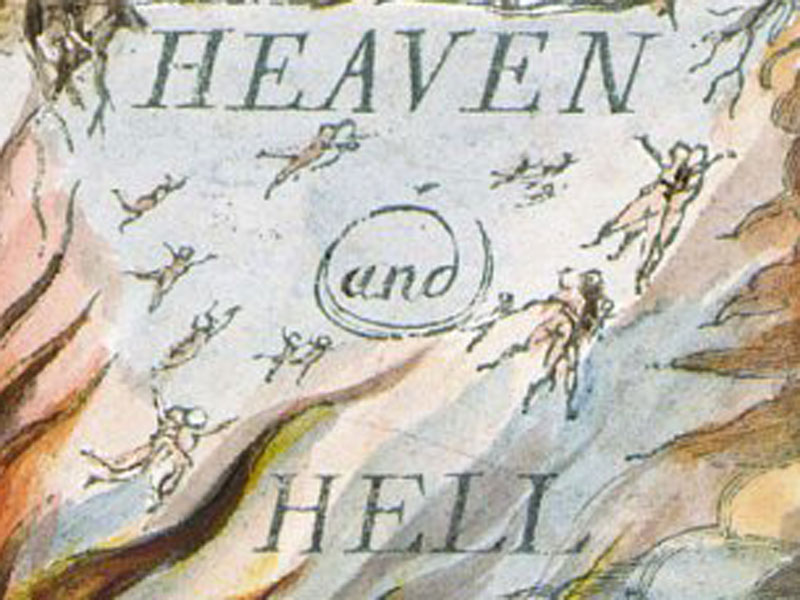

Circle & Triangle
"There is intelligent design, but we are the designers."
Edition
A month ago, Phil Davidson burst onto the scene with a series of albums that have seen him rocket to the kind of success that hasn't been seen in years. Despite this, the singer claims never to have played guitar before and, some claim, his talent was a "gift from the Devil."
"Everyone knew, but no-one did enough," said a DWP representative.
MSc International Development alumna Fatima Binte Umar reflects on an LSE event exploring the next financial collapse...
Circle&Triangle has been granted an exclusive audience with Pilot. Though the guardrails remained up, there was still a lot to learn from the country's fearless leader.
We explore the upsides — and the downsides — of working within the Creative Economy and ask whether this is really what progress looks like...

For the last month, it's been impossible to go online without being confronted by an auditory wall of Phil Davidson's music. So take a moment to sit back and reflect on the highlights and lowlights of his first four albums...
Bill used to be a welcome member of a pantheon of Gods, though the past thousand years haven't been kind to him. He's returning — and he's saying it's time we moved on from the scapegoat...
We sat down with two of Asia's most celebrated Gods and discussed the differences between East and West and why, they believe, this mess is really not their fault...

Arts and CultureThe epigraphs throughout The Crossroad are drawn from William Blake. This is not a coincidence. This is the entire argument.